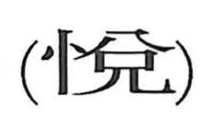

悦

Kun: yorokobu | On: etsu
to be glad ・ delight ・ pleasure
Explanation
Shirakawa reads 悦 as a phono‑semantic compound with 兌 supplying the on‑reading etsu and picturing a ritual shaman (the figure 兄) who carries on the head a covenant vessel into which petitions to the gods are placed, while the sign 八 suggests the gentle descent of divine breath upon that servant. With the heart element added, the character points to the shaman’s heart seized and suffused with rapture in response to the deity’s presence. From this image comes the sense of being gladdened and taking delight; relatedly, 説 was also used in the sense “to rejoice.”